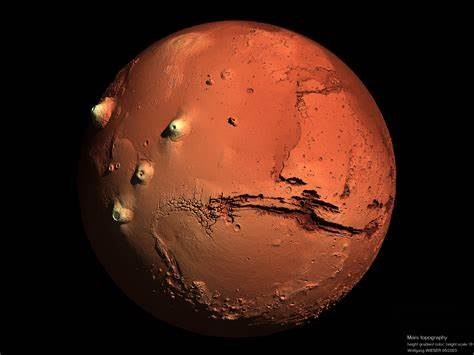

Mars, souvent appelée la "planète rouge", est la quatrième planète du système solaire. Sa couleur distinctive est due à l'oxyde de fer présent à sa surface.
Les scientifiques s'intéressent particulièrement à Mars en raison de ses similitudes potentielles avec la Terre dans le passé.
